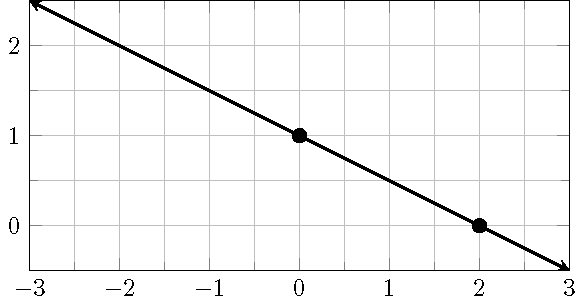
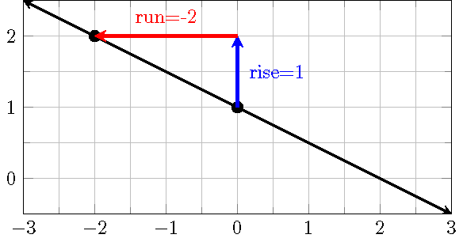
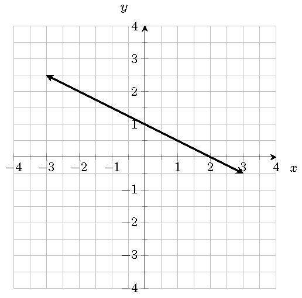

Topic 12 Linear Functions
12.1 Cost, Revenue and Profit
A company has fixed costs of $10,000 for equipment and variable costs of $15 for each unit of output. The sale price for each unit is $25. What is total cost, total revenue and total profit at varying levels of output?
12.2 The Slope-Intercept Form Equation
The slope of a line measures the steepness, in other words, “rise” over “run”, or rate of change of the line. Using the rectangular coordinate system, the slope \(m\) of a line is defined as \[ m=\dfrac{y_2-y_1}{x_2-x_1}=\dfrac{\text{rise}}{\text{run}}=\dfrac{\text{change in the output }y}{\text{change in the input } x}, \] where \((x_1, y_1)\) and \((x_2, y_2)\) are any two distinct points on the line. If the line intersects the \(y\)-axis at the point \((0, b)\), then a point \((x, y)\) is on the line if and only if \[ y=mx+b. \] This equation is called the slope-intercept form of the line.
12.3 Point-Slope Form Equation of a Line
Suppose a line passing through the point \((x_0, y_0)\) has the slope \(m\). Solving from the slope formula, we see that any point \((x, y)\) on the line satisfies the equation equation \[ y=m(x-x_0)+y_0 \] which is called the point-slope form equation.
12.4 Linear Function
A linear function \(f\) is a function whose graph is a line. An equation for \(f\) can be written as \[f(x) = mx + b\] where \(m\) is the slope and \(b=f(0)\).
A function \(f\) is a linear function if the following equalities hold \[ \dfrac{f(x_2)-f(x_1)}{x_2-x_1} =\dfrac{f(x_3)-f(x_1)}{x_3-x_1} \] for any three distinct points \((x_1, y_1)\), \((x_2, y_2)\) and \((x_3, y_3)\) on the graph of \(f\).
12.5 Equations of Linear Functions
Example 12.1 Find the slope-intercept form equation for the linear function \(f\) such that \(f(2)=5\) and \(f(-1) = 2\).
Solution.
- Find the slope \(m\): \(m=\frac{f(2)-f(-1)}{2-(-1)}=\frac{5-2}{2-(-1)}=\frac{3}{3}=1\).
- Plug one of the points, say \((2, 5)\) in the point-slope form equation, we get \(y=1\cdot(x-2)+5\)
- Simplify the above equation, we get the slope-intercept form equation \(f(x)=x+3\).
12.6 Graph a Linear Function by Plotting Points
Example 12.2 Sketch the graph of the linear function \(f(x)=-\frac12 x + 1\).
Solution.
Method 1: Get points by evaluating \(f(x)\).
- Choose two or more input values, e.g. \(x=0\) and \(x=2\).
- Evaluate \(f(x)\): \(f(0)=1\) and \(f(2)=0\).
- Plot the points \((0, 1)\) and \((2, 0)\) and draw a line through them.

Method 2: Get points by raise and run.
- Plot the \(y\)-intercept \((0, f(0))=(0, 1)\).
- Use \(\frac{\text{rise}}{\text{run}}=-\frac{1}{2}\) to get one or more points, e.g, we will get \((-2, 2)\) by taking \(\text{rise}=1\) and \(\text{run}=-2\), i.e. move up \(1\) unit, then move to the right \(2\) units.
- Plot the points \((0, 1)\) and \((-2, 2)\) and draw a line through them.

12.7 Horizontal and Vertical Lines
A horizontal line is defined by an equation \(y=b\). The slope of a horizontal line is simply zero. A vertical line is defined by an equation \(x=a\). The slope of a vertical line is undefined.
A vertical line gives an example that a graph is not a function of \(x\). Indeed, the vertical line test fails for a vertical line.
12.8 Explicit Function
When studying functions, we prefer a clearly expressed function rule. For example, in \(f(x)=-\frac23x+1\), the expression \(-\frac23x+1\) clearly tells us how to produce outputs. For a function \(f\) defined by an equation, for instance, \(2x+3y=3\), to find the function rule (that is an expression), we simply solve the given equation for \(y\). \[ \begin{aligned} 2x+3y&=3\\ 3y&=-2x+3\\ y&=-\frac23x+1. \end{aligned} \] Now, we get \(f(x)=-\frac23x+1\).
12.9 Perpendicular and Parallel Lines
Any two vertical lines are parallel. Two non-vertical lines are parallel if and only if they have the same slope.
A line that is parallel to the line \(y=mx+a\) has an equation \(y=mx+b\), where \(a\neq b\).
Horizontal lines are perpendicular to vertical lines. Two non-vertical lines are perpendicular if and only if the product of their slopes is \(-1\).
A line that is perpendicular to the line \(y=mx+a\) has an equation \(y=-\frac1m x+b\).
12.10 Finding Equations for Perpendicular or Parallel Lines
Example 12.3 Find an equation of the line that is parallel to the line \(4x+2y=1\) and passes through the point \((-3, 1)\).
Solution.
- Find the slope \(m\) of the original line from the slope-intercept form equation by solving for \(y\). \(y=-2x+\frac12\). So \(m=-2\).
- Find the slope \(m_\parll\) of the parallel line. \[m_\parll=m=-2.\]
- Use the point-slope form. \[ \begin{aligned} y-1&=-2(x+3)\\ y&=-2x-5. \end{aligned} \]
Example 12.4 Find an equation of the line that is perpendicular to the line \(4x-2y=1\) and passes through the point \((-2,3)\).
Solution.
- Find the slope \(m\) of the original line from the slope-intercept form equation by solving for \(y\). \(y=2x-\frac12\). So \(m=2\).
- Find the slope \(m_\perp\) of the perpendicular line. \[m_\perp=-\frac1m=-\frac12.\]
- Use the point-slope form. \[ \begin{aligned} y-3&=-\frac12(x+2)\\ y&=-\frac{1}{2}x+2. \end{aligned} \]
12.11 Practice
Problem 12.1 Find the slope of the line passing through
- \((3,5)\) and \((-1, 1)\)
- \((-2,4)\) and \((5, -2)\).
Problem 12.2 Find the point-slope form equation of the line with slope \(5\) that passes though \((-2, 1)\).
Problem 12.3 Find the point-slope form equation of the line passing thought \((3, -2)\) and \((1,4)\).
Problem 12.4 Find the slope-intercept form equation of the line passing through \((6, 3)\) and \((2, 5)\).
Problem 12.5 Determine whether the linear functions \(f(x)\) and \(h(x)\) with the following values \(f(-2)=-4\) \(f(0)=h(0)=2\) and \(h(2)=8\) define the same function. Explain your answer.
Problem 12.6 Suppose the points \((5, -1)\) and \((2, 5)\) are on the graph of a linear function \(f\). Find \(f(-3)\).
Problem 12.7 Graph the functions.
- \(f(x)=-x + 1\)
- \(f(x)=\frac{1}{2}x - 1\)
Problem 12.8 A storage rental company charges a base fee of $15 and $\(x\) per day for a small cube. Suppose the cost is $20 dollars for 10 days.
- Write the cost \(y\) (in dollars) as a linear function of the number of days \(x\).
- How much would it cost to rent a small cube for a whole summer (June, July and August)?
Problem 12.9 Find an equation for each of the following two lines which pass through the same point \((-1, 2)\).\
- The vertical line.
- The horizontal line.
Problem 12.10 Line \(L\) is defined by the equation \(2x-5y=-3\). What is the slope \(m_\parallel\) of the line that is parallel to the line \(L\)? What is the slope \(m_\perp\) of the line that is perpendicular to the line \(L\).
Problem 12.11 Line \(L_1\) is defined by \(3y+5x=7\). Line \(L_2\) passes through \((-1, -3)\) and \((4, -8)\). Determine whether \(L_1\) and \(L_2\) are parallel, perpendicular or neither.
Problem 12.12 Find the point-slope form and then the slope-intercept form equations of the line parallel to \(3x-y=4\) and passing through the point \((2,-3)\).
Problem 12.13 Find the slope-intercept form equation of the line that is perpendicular to \(4y-2x+3=0\) and passing through the point \((2, -5)\)
Problem 12.14 The line \(L_1\) is defined \(Ax+By=3\). The line \(L_2\) is defined by the equation \(Ax+By=2\). The line \(L_3\) is defined by \(Bx-Ay=1\). Determine whether \(L_1\), \(L_2\) and \(L_3\) are parallel or perpendicular to each other.
Problem 12.15 Use the graph of the line \(L\) to answer the following questions
- Find an equation for the line \(L\).
- Find an equation for the line \(L_\perp\) perpendicular to \(L\) and passing through \((1,1)\).
- Find an equation for the line \(L_\parallel\) parallel to \(L\) and passing through \((-2,-1)\).

Problem 12.16 Determine whether the points \((-3,1)\), \((-2,6)\), \((3,5)\) and \((2, 0)\) form a square. Please explain your conclusion.
Problem 12.17 A tutoring center has fixed monthly costs of $5000 that covers rent, utilities, insurance, and advertising. The center charges $60 for each private lesson and each lesson has a variable cost of $35 to pay the instructor. Determine the number of private lessons that must be held for the tutoring center to make a profit.
Problem 12.18 In 2008, an elementary school population was 1011. By 2018 the population had grown to 1281. Assume the population changes linearly.
Find an equation for the population \(P\) of the school \(t\) years after 2008.
What would be the population of the school in 2021.